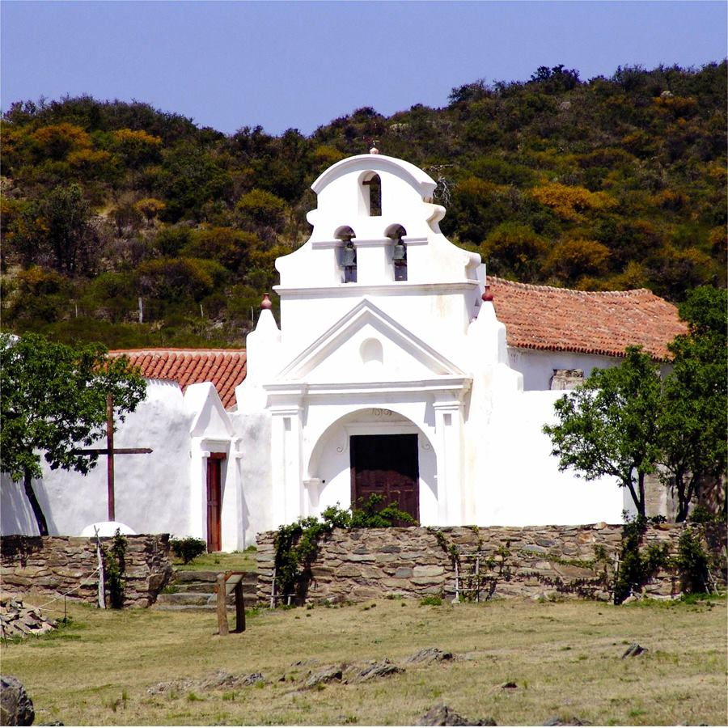

Al conocer los diferentes estancias y los lugares que encuentran esta misma, querra repetir el recorrido nuevamente, porque quedara maravillado con las diferentes tipos de estilos arquitectonicosque presentan.
Si le gusta hacer caminatas podra difrutot los diferentes paisajes que presentan las estancias que se encuentran en la provincia de Cordoba.
Para tener un mejor atencion personalizada podra llenar el siguiente formulario.